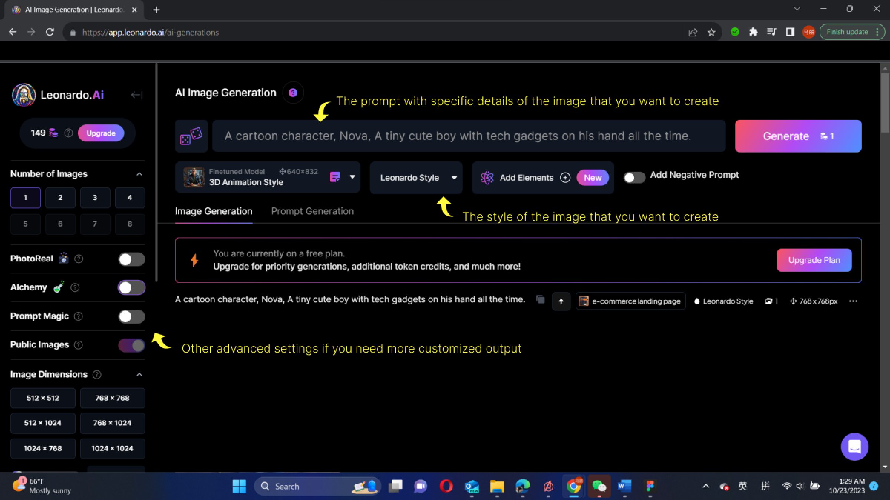
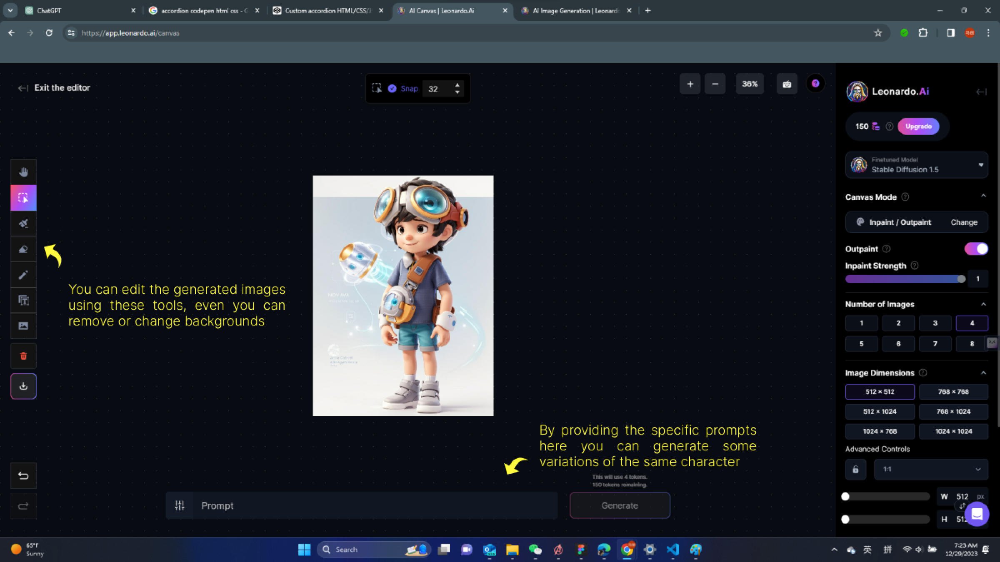
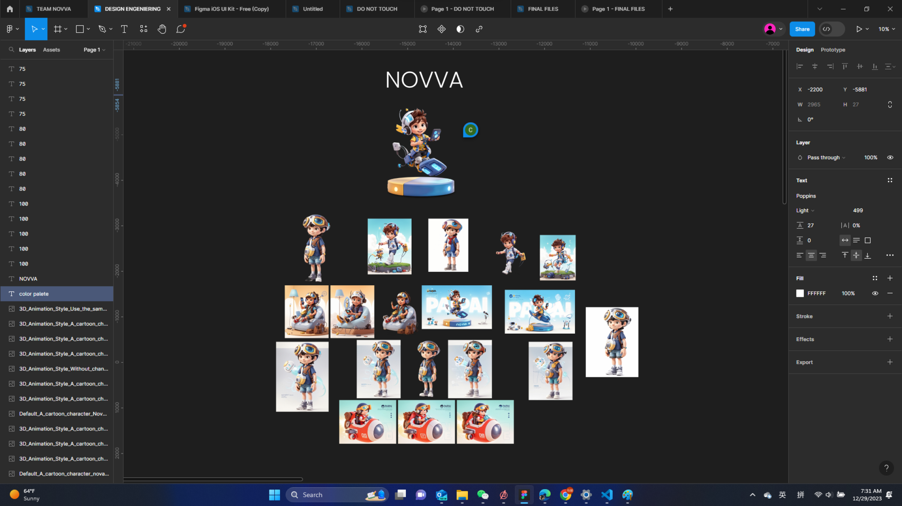

Step 1: Setting the Vision
Before diving into creating a character using Leonardo AI, it's
essential to establish a clear vision of what we want our character to
look like. Consider the character's appearance, style, and
personality. Having a well-defined concept will guide the AI's
creative process effectively.
Step 2: Providing Input to the AI
Once you choose the AI Image Generation option, you have the
opportunity to communicate your vision to Leonardo AI. You can specify
details such as the character's features, color palette, and any
specific design elements you want to incorporate. This input will act
as the foundation for the AI's creative process.

Step 3: Initiating the AI's Creative Process
Leonardo AI employs a complex neural network to transform your input
into a visual representation. The AI's algorithms analyze your
instructions and begin generating a character that aligns with your
vision. This process might take a few moments, depending on the
complexity of your request.
Step 4: Refinement and Fine-Tuning
After the AI generates the initial character, you can assess its
design and make refinements as needed. This step allows you to
fine-tune details, adjust the character's appearance, and ensure it
perfectly aligns with your vision.

Step 5: Exporting the Character
Once you are satisfied with the character's design, you can export it
in your preferred file format. Leonardo AI provides options for
various file types, ensuring compatibility with your intended
application.

Step 6: Incorporating the Character into Your Project
Now that you have your character, you can seamlessly integrate it into
your project. Whether it's for a website, game, or any other
application, your AI-generated character will add a unique and
engaging element to your work.
In conclusion, Leonardo AI serves as a powerful tool for breathing
life into your creative visions. By following these steps, you can
harness the capabilities of artificial intelligence to design a
character that aligns perfectly with your project's needs and
requirements.